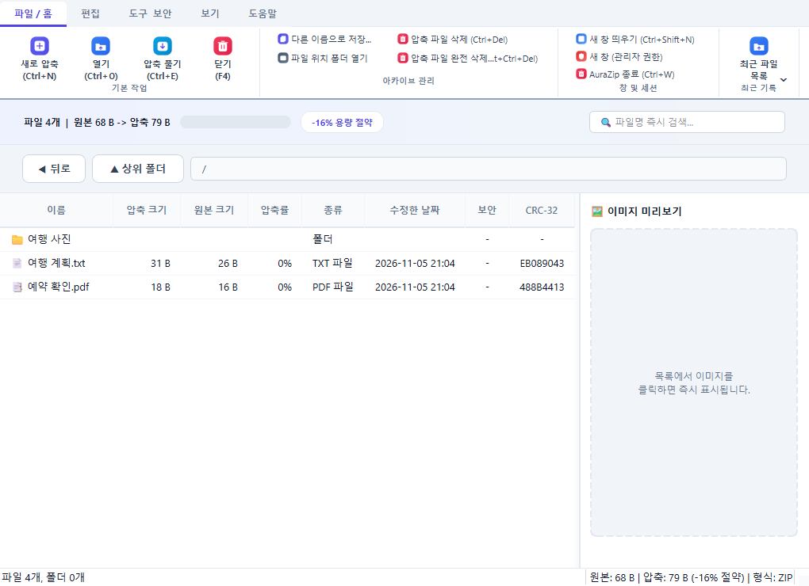

열고, 압축하고, 풀기
다양한 형식의 압축 파일을 열고 필요한 파일을 관리하세요. 검색과 파일 목록으로 내용도 쉽게 살펴볼 수 있습니다.
열고, 정리하고, 안전하게 보관하세요.
AuraZip은 매일의 압축 작업을 한 화면에 담았습니다.
Windows 10 / 11 · 무료 · v1.0.4
압축부터 보안까지, 필요한 도구를
익숙한 리본 메뉴에서 빠르게 찾아보세요.
다양한 형식의 압축 파일을 열고 필요한 파일을 관리하세요. 검색과 파일 목록으로 내용도 쉽게 살펴볼 수 있습니다.
AES-256 암호화와 무결성 검사 도구를 지원합니다. Windows Defender 검사 기능도 이용할 수 있습니다.
인디고, 다크, 민트, 코랄 테마 중 원하는 분위기를 선택하세요. 선택한 테마는 다음 실행에도 유지됩니다.
리본 메뉴와 파일 목록으로
필요한 작업을 한눈에 확인하세요.

실제 앱 실행 화면 · 파일 목록은 설명을 위한 예시입니다.
설치형으로 Windows에 연결하거나, 포터블 버전을 원하는 폴더에서 바로 사용하세요.